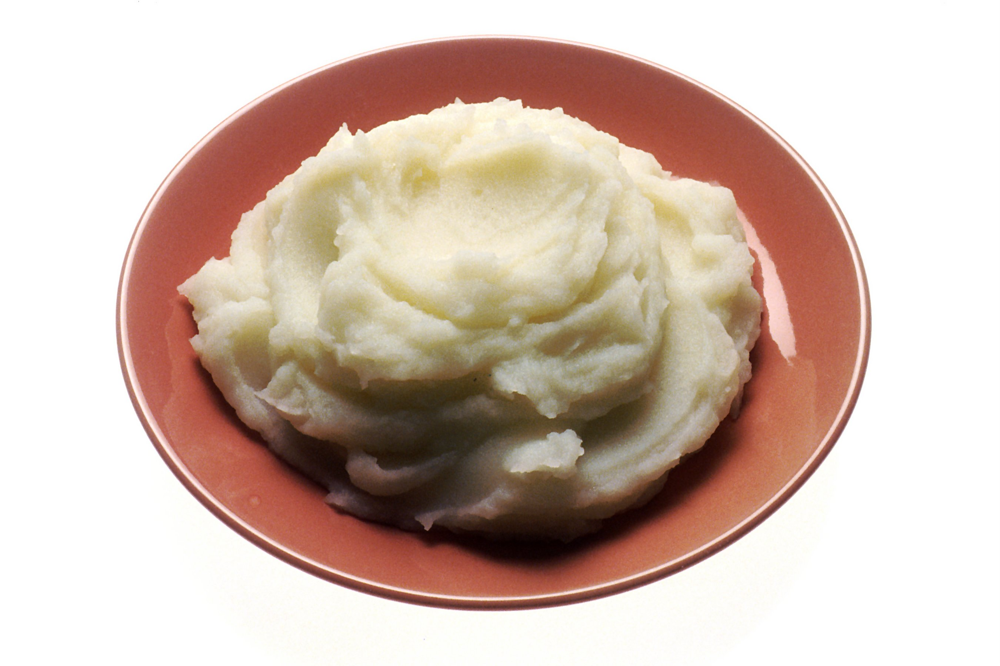

Mashed potatoes

A simple, yet elegant, addition to any steak meal
A return to normalcy. An irishman's best friend. The right hand man to a ribeye.
It has gone by many names, but the form stays true. The dish was here before you were born and will be here
long after you are gone.
Ingredients:
- 6 yukon gold potatoes
- 2 sticks butter
- Kosher salt and freshly cracked pepper to taste
- Peel and boil potatoes
- Pour water out, keeping potatoes in pot. Mash.
- While not fully smooth, dump in two sticks butter. Continue mashing until smooth
- Season to taste with salt and pepper. enjoy